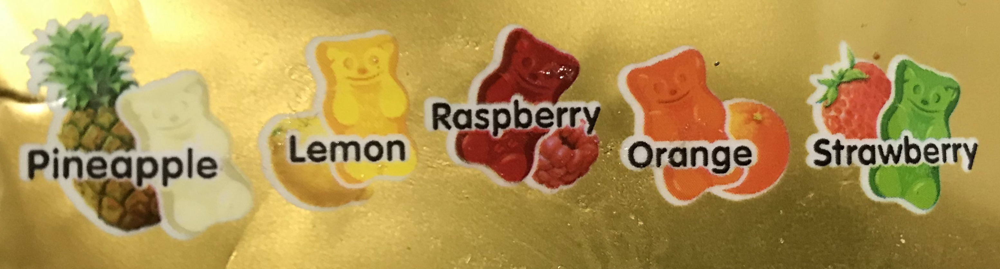
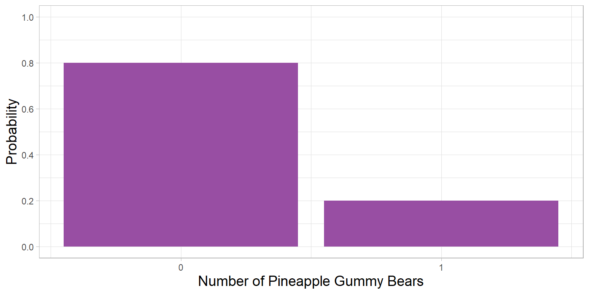
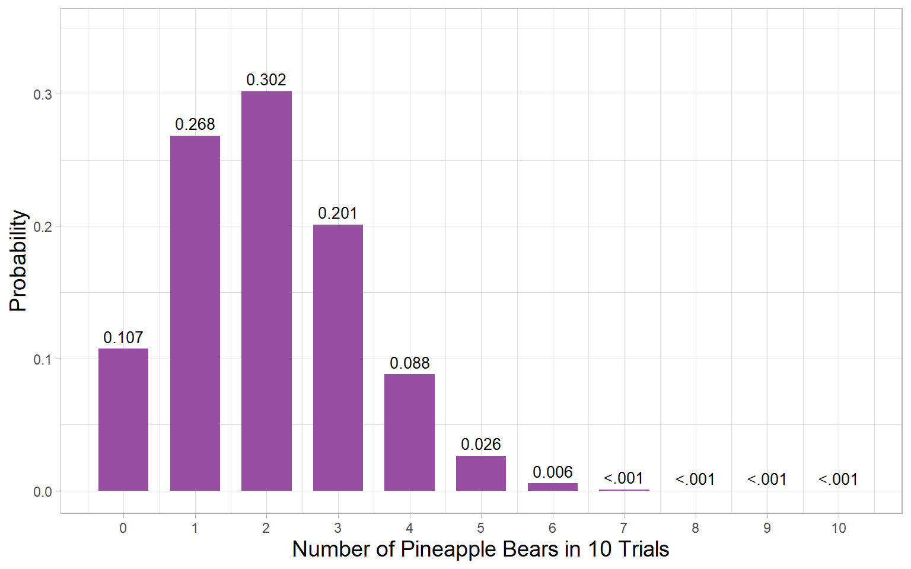
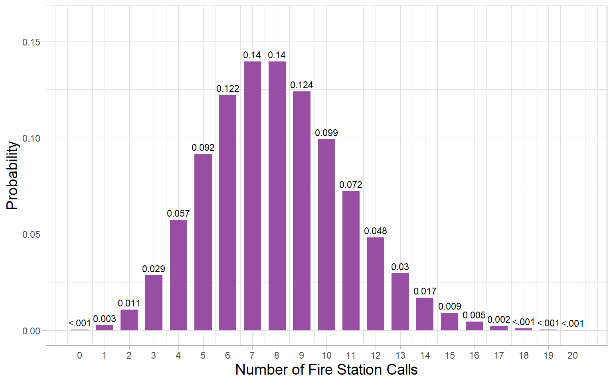
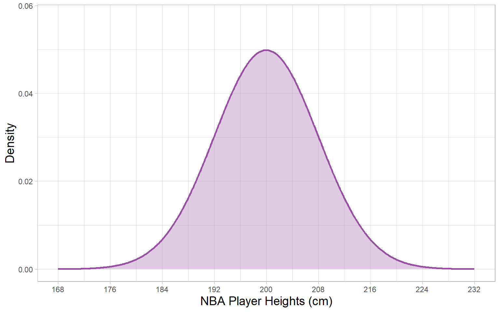

| Cancer | No Cancer | Total | |
|---|---|---|---|
| Positive Test | 94 | 46 | 140 |
| Negative Test | 6 | 854 | 860 |
| Total | 100 | 900 | 1000 |
Lecture 4: Probability
Mark Himmelstein
Probability and Statistics

Probability tells us how data are randomly generated based on some underlying facts about a population.
- Numerical language for describing how likely different events are to occur
- How we go from parameters \(\rightarrow\) data
Terminology
- Event: A possible outcome or combination of outcomes
- Sample Space: All possible outcomes
- Sample space for a coin flip is \(\text{\{heads, tails\}}\)
- Curly brackets indicate a set of individual elements
- Sample space for points in an NBA game \([0,\infty]\)
- Square brackets indicate an inclusive interval
- Sample space for a coin flip is \(\text{\{heads, tails\}}\)
Notation
- \(P(A)\): The probability of event \(A\)
- \(P(A \cap B)\): The probability of both event \(A\) and \(B\)
- \(P(A \cap \neg B)\): The probability of both event \(A\) and NOT \(B\)
- \(P(A \cup B)\): The probability of event \(A\) or \(B\)
- \(P(A|B)\): The probability that event \(A\) happens given that event \(B\) has happened
What is More Likely?
\(P(\text{Georgia Tech Beats CU})\) or \(P(\text{Georgia Tech Beats CU} \cap \text{Georgia Tech Scores at least 20})\)
- \(P(\text{Georgia Tech Beats CU})\) includes all the times Georgia Tech wins and scores less than 20
\(P(\text{Georgia Tech Beats CU} \cap \text{Georgia Tech Scores at least 20})\) or \(P(\text{Georgia Tech Beats CU} \cup \text{Georgia Tech Scores at least 20})\)
- \(P(\text{Georgia Tech Beats CU} \cup \text{Georgia Tech Scores at least 20})\) includes all the times Georgia Tech wins and scores less than 20 AND includes all the times Georgia Tech loses while scoring at least 20
\(P(\text{Georgia Tech Beats CU} \cap \text{Georgia Tech Scores at least 20})\) or \(P(\text{Georgia Tech Beats CU} | \text{Georgia Tech Scores at least 20})\)
- \(P(\text{Georgia Tech Beats CU} \cap \text{Georgia Tech Scores at least 20})\) includes cases where both must me true out of ALL cases, while \(P(\text{Georgia Tech Beats CU} | \text{Georgia Tech Scores at least 20})\) only considers cases where Georgia Tech scores at least 20 (smaller denominoator)
Axioms
Axiom (noun): Statement that is taken to be true without need of proof
- Positivity: For any \(A\), \(0 \leq P(A) \leq 1\)
- The sum of the probability of all elements of a sample space \(= 1\)
Example:
- If I flip a coin, the probability of heads must be between 0 and 1, and the sum of the probability of heads and the probability of tails is always 1
- Even for an unfair coin, one of the outcomes is guaranteed, and must happen if the other outcome does not happen
Gummy Bears
Haribo Gold Bears come in 5 flavors:

The “Classical” Definition of Probability
Suppose we have a bag of gummy bears with exactly equal numbers of the 5 flavors
If we randomly pick one gummy bear, what is the probability of picking a pineapple gummy?
\(P(\text{pineapple}) = \frac{\text{\# of pineapple gummy bears}}{\text{total \# of gummy bears}}\)
Classical Definition of Probability: Proportion of ways a particular outcome can occur out of all possible outcomes
Bernoulli Trials
Drawing a pineapple gummy bear is known as a Bernoulli trial:
“Experiment” with exactly two possible outcomes
e.g., heads vs. tails, pass vs. fail this class, diagnosis vs. no diagnosis, pineapple vs. other flavor gummy
If we code a “success” as “1” and a “failure” as “0”, then the probability of success in any Bernoulli trial equals
\[\pi = \frac{\text{\# of ways to succeed}}{\text{\# of ways to succeed} + \text{\# of ways to fail}}\]
NOTE: \(\pi\) is generic notation for a parameter (population value) representing the probability of success, NOT 3.14159….
The Bernoulli Distribution
Remember that \(\pi\) is not a statistic but a parameter
- Represents an underlying truth: the proportion of ways a success can happen out of how many ways successes and failures can both happen
If we imagine we were to start drawing gummy bears, we can define the outcomes as a probability distribution defined by the parameter \(\pi\)
\[\text{Pineapple Bear} \sim \text{Bernoulli}(\pi)\]
Read: Pineapple bears are distributed Bernoulli (follow a Bernoulli distribution) with probability \(\pi\)
In the population, the Bernoulli distribution has
- Mean \(\mu= \pi\)
- Variance \(\sigma^2 = \pi(1-\pi)\)
More Bernoulli
Let’s code successes on a given trial \(i\) as \(y_i = \text{Pineapple Bear} = 1\) and \(\text{any other flavor} = 0\)
We can write the Bernoulli distribution as
\[P(y_i| \pi)=\pi^{y_i}(1-\pi)^{1-y_i}\]
That means, for \(y_i = \text{Pineapple Bear} = 1\)
- \(\pi^{y_i} = \pi^{1} = \pi\)
- \((1-\pi)^{1-y_i} = (1 - \pi)^{1 - 1} = 1\)
- \(P(y_i| \pi)=\pi^{y_i}(1-\pi)^{1-y_i} = \pi(1) = \pi\)
And for \(y_i = \text{any other flavor} = 0\)
- \(\pi^{y_i} = \pi^{0} = 1\)
- \((1-\pi)^{1-y_i} = (1 - \pi)^{1 - 0} = (1 - \pi)\)
- \(P(y_i| \pi)=\pi^{y_i}(1-\pi)^{1-y_i} = 1(1 - \pi) = 1 -\pi\)
Alternate Bernoulli
You might also see it written this way:
\[P(y_i | \pi) = \pi(y_i) + (1 - \pi)(1 - y_i)\]
That means, for \(y_i = \text{Pineapple Bear} = 1\)
- \(\pi(y_i) = \pi(1) = \pi\)
- \((1 - \pi)(1 - y_i) = (1 \pi)(1 - 1) = 0\)
- \(P(y_i| \pi) = \pi(y_i) + (1 - \pi)(1 - y_i) = \pi + 0 = \pi\)
And for \(y_i = \text{any other flavor} = 0\)
- \(\pi(y_i) = \pi(0) = 0\)
- \((1 - \pi)(1 - y_i) = (1 - \pi)(1 - 0) = 1 -\pi\)
- \(P(y_i| \pi) = \pi(y_i) + (1 - \pi)(1 - y_i) = 0 + 1 -\pi = 1- \pi\)
Multiple Trials
What if we sample more than one gummy bear?
Two ways:
Without replacement
Probability of a pineapple on the 2nd draw depends on the outcome of the first draw
Outcomes are dependent
The probability of an event changes depending on earlier events
With replacement
Probability of pineapple on the 2nd draw is the same as for the 1st draw
Outcomes are independent
The same probabilities apply to all events
Indepenent Trials
What if we want to know the probability we would get five pineapple bears from a bag of 10 (each bear has has \(\pi = .2\) of being pineapple)?
- This is known as the binomial distribution
- Two parameters, sample size (\(n\)) and probability of success (\(\pi\))
- For any number of \(k\) successes
\[\begin{pmatrix} n \\ k\end{pmatrix}\pi^k (1-\pi)^{n-k}\]
Where
\[\begin{pmatrix} n \\ k\end{pmatrix} = \frac{n!}{k!(n-k)!}\]
Binomial Distribution
What this means: If we repeatedly sampled bags of 10 gummy bears, we would expect to get exactly five pineapples with probability
\[P(\text{five pineapples}) = \frac{n!}{k!(n-k)!}\pi^k (1-\pi)^{n-k} =\] \[\frac{10!}{5!(10-5)!}.2^5 (1-.2)^{10-5} = .026\]
For every 100 times we repeated this exercise, we would expect to get exactly five pineapples in 10 draws about three times.
The Binomial Distribution
We can write that variable \(X\) follows a binomial distribution with \(n\) draws and \(\pi\) probability of success on each draw as:
\[X \sim \text{Binomial}(n, \pi)\]
In the population, the binomial distribution has
- Mean \(\mu= n\pi\)
- Variance \(\sigma^2 = n\pi(1-\pi)\)
Cumulative Binomials
We can also use the binomial distribution to consider cumulative outcomes by summing the probabilities of each outcome within a cumulative range.
For example, the probability that we would draw fewer than three (exactly zero, exactly one, or exactly two) pineapples in bags of 10 bears is:
\[P(\text{fewer than three pinapples}) = \frac{10!}{0!(10-0)!}.2^0 (1-.2)^{10-0} +\] \[\frac{10!}{1!(10-1)!}.2^1 (1-.2)^{10-1} + \frac{10!}{2!(10-2)!}.2^2 (1-.2)^{10-2} = .68\]
And we can get the complement of this cumulative probability by just subtracting it from 1. The probability we would draw at least three pineapples is
\[P(\text{at least three pinapples}) = 1 - P(\text{fewer than three pinapples}) =\] \[1 - .68 = .32\]
Cumulative Problems
The easiest way to do these problems “by hand” is to reduce the number of calculation steps.
For example, if I wanted to know the probability of nine or more pineapples, I would do
\[P(\text{nine or more pineapples}) = \frac{10!}{9!(10-9)!}.2^9 (1-.2)^{10-9} +\] \[\frac{10!}{10!(10-10)!}.2^{10} (1-.2)^{10-10} = \text{some very small number}\]
Then to get fewer than nine
\[P(\text{fewer than nine pineapples}) = 1 - \text{that very small number}\]
Practice
Lets say DoorDash orders come within the estimated delivery time 85% of the time. If you make five DoorDash orders, what is the probability that fewer than four will come within the estimated delivery window?
Easier to first calculate four or more, then subtract that from 1
\(P(\text{four or more on time}) = \frac{5!}{4!(5-4)!}.85^4 (1-.85)^{5-4} +\) \(\frac{5!}{5!(5-5)!}.85^5 (1-.85)^{5-5} = .84\)
\(P(\text{fewer than four on time}) = 1 - .84 = .16\)
Counting Events
- The binomial distribution tells us the probability of a given number of successes in a fixed number of trials. Examples:
- Number of pineapple gummies in a bag of 10
- Number of heads in five coin flips
- The Poisson distribution tells us how many “successes” occur (specific type of event happens) in a fixed time period. Examples:
- Number of Ph.D. applications Georgia Tech receives in an application cycle
- Number of calls a fire station gets on a given day
The difference between the binomial and Poisson
- Binomial: Number of successes in a fixed number of trials
- Poisson: Number of successes in unspecified number of trials over fixed time period
The Poisson Distribution
The Poisson distribution has the following form:
\[P(x) = \frac{e^{-\mu}\mu^x}{x!}\]
Where
- \(e\) is Euler’s number (base of natural logarithm) \(\approx 2.718\)
- \(\mu\) is the mean number of successes in the population
- \(x\) is the number of observed successes (or counts)
Poisson Example
If the mean number of calls to the fire station in a day is 8, the probability of getting exactly 11 calls in a given day would be
\[P(x = 11) = \frac{e^{-8}8^{11}}{11!} = .072\]
In the Poisson distribution
- The population mean is \(\mu\)
- The population variance \(\sigma^2\) also \(= \mu\)
Cumulative Poissons
You can also get cumulative probabilities from Poisson distributions. The cumulative probability of 11 or fewer calls in a given day would be
\[P(x \leq 11) = \sum_{i=0}^{11}\frac{e^{-8}8^{i}}{i!} = .89\]
And the probability of more than 11 calls would be
\[P(x > 11) = 1 - P(x \leq 11) = 1 - .89 = .11\]
Practice
You work at a car dealership that sells on average three cars in a given week. What is the probability you sell one or fewer cars in a given week?
\(P(x \leq 1) = \frac{e^{-3}3^{0}}{0!} +\frac{e^{-3}3^{1}}{1!} = .20\)
What is the probability you sell more than one car in a given week?
\(P(x > 1) = 1 - .20 = .80\)
Continuous Variables
The Bernoulli, Binomial, and Poisson distributions all involve discrete variables. What about continuous variables?
- The Normal Distribution will be our major focus
- Symmetrical with parameters \(\mu\) and \(\sigma\)
- The lognormal distribution: \(e^{\text{normal distribution}}\)
- Creates distribution with lower boundary of zero and no upper boundary
- The gamma distribution
- A different distribution with a lower boundary of zero and no upper boundary
- The beta distribution
- Continuous distribution on the interval \([0, 1]\)
The Normal Distribution
The formula for the density of the normal distribution is
\[P(x) = \frac{1}{\sqrt{2\pi \sigma^2}}e^{\frac{(-x-\mu)^2}{2\sigma^2}}\]
There are two parameters (here \(\pi\) is the number not a parameter!): \(\mu\) and \(\sigma\). We can write that \(x\) is normally distributed with mean \(\mu\) and variance \(\sigma^2\) as
\[x \sim \text{normal}(\mu, \sigma^2)\]
Simple interpretation: In the population, the average value of \(x\) is \(\mu\) and the average amount of squared error between all members of the population and \(\mu\) is \(\sigma^2\)
Sometimes you will also see it as
\[x \sim \text{normal}(\mu, \sigma)\]
In which case we are referring to the standard deviation rather than the variance
Normal Distribution Example
Let’s imagine in the population of all possible basketball players, the average player height is \(\mu = 200\)cm and the variance is \(\sigma^2 = 64\text{cm}^2\).
That means, if I randomly sampled a group of basketball players, I would expect:
- The average height of players in my sample to be 200cm
- The average squared difference between each players’ height and 200cm to be 64
Visualizing Distributions
Two types of probability distributions
Probability mass functions (PMFs)
Appropriate for discrete variables
PMFs give the probability of a particular event
Think: bar plots (relative frequency on \(y\) axis)
Probability density functions (PDFs)
The probability of any specific event (technically) equals zero
PDFs give the relative probability of an event in the region
- \(\rightarrow\) higher values in more likely regions
Think: histograms & kernel density plots (density on \(y\) axis)
Bernoulli PMF
If I sample one gummy bear and \(\pi_\text{pineapple} = .2\), then the distribution (PMF) of whether I draw a pineapple gummy bear in my sample is:

Binomial PMF
If I sample 10 gummy bears and \(\pi_\text{pineapple} = .2\), then the distribution (PMF) of the number of Pineapple bears I draw is:

Poisson PMF
If I sample calls to a fire station on a given week when the mean number of calls is \(\mu = 8\), then the distribution (PMF) of the number of calls is:

Normal Density Function
If I NBA players and measure their heights with population mean \(\mu = 200\)cm and variance \(\sigma^2 = 64\text{cm}^2\), then the density (PDF) of player heights is:

Review
How are PMFs and PDFs different?
- PMFs give exact probabilities of discrete events. PDFs give densities representing the relative probabilities of continuous events within given ranges
How are PMFs different from the bar plots we discussed last time?
- PMFs represent the discrete probability distribution for the population while bar plots represent the empirical distribution of the sample
How are PDFs different from the kernel density plots we discussed last time?
- PDFs represent the continuous probability distribution for the population while kernel density plots represent the empirical distribution of the sample
Independence
Independent Events: The probability of one event happening does not depend on whether or not another event has happened
If \(A\) and \(B\) are independent events:
- \(P(A \cap B) = P(A)P(B)\)
- \(P(A|B) = P(A)\)
Most statistical methods make use of the idea of independence
- “Independence of observations” assumption
- Assumes that if you know one data point and the parameters of the distribution, new data point doesn’t give you any new information about probability distribution of other data points
- Non-independent: Knowing my height, how tall do you think my brother is?
- Independent: Knowing my height, how tall do you think the next person to walk by the door will be?
Joint & Marginal
Joint probability: The probability of two events both occurring
\[P(A \cap B)\]
If \(A\) and \(B\) are independent, \(P(A \cap B) = P(A)P(B)\)
If \(A\) and \(B\) are mutually exclusive, \(P(A \cap B) = 0\)
Marginal probability: The probability of one event occurring
\[P(A)\]
Irrespective of other events
\(P(A) = P(A \cap B) + P(A \cap \neg B)\)
Contingency Table
Contingency tables show us how frequently events occur jointly (cells) and marginally (margins)
Marginal Probability
We can calculate marginal probabilities from a contingency table
| Cancer | No Cancer | Total | |
|---|---|---|---|
| Positive Test | 94 | 46 | 140 |
| Negative Test | 6 | 854 | 860 |
| Total | 100 | 900 | 1000 |
\(P(\text{positive test}) = \frac{\text{\# with a positive test}}{\text{Total \#}} = \frac{140}{1000} = .14\)
What is the marginal probability of having a negative test?
\(P(\text{negative test}) = \frac{\text{\# with a negative test}}{\text{Total \#}} = \frac{860}{1000} = .86\)
Joint Probability
We can calculate joint probabilities from a contingency table
| Cancer | No Cancer | Total | |
|---|---|---|---|
| Positive Test | 94 | 46 | 140 |
| Negative Test | 6 | 854 | 860 |
| Total | 100 | 900 | 1000 |
\(P(\text{cancer } \cap \text{ positive test}) = \frac{\text{\# with cancer AND a positive test}}{\text{Total \#}} =\) \(\frac{94}{1000} = .094\)
What is the joint probability of not having cancer and receiving a positive test?
\(P(\text{no cancer } \cap \text{ positive test}) = \frac{\text{\# with no cancer AND a positive test}}{\text{Total \#}} =\) \(\frac{46}{1000} = .046\)
Conditional Probability
Conditional probability: The probability of an event happening once another event is known
Conditional probability looks something like
\[P(A | B) = \frac{\text{\# of ways for } A \text{ to happen when } B \text{ happens}}{\text{\# of ways for } B \text{ to happen}}\]
Calculating Conditional Probability
| Cancer | No Cancer | Total | |
|---|---|---|---|
| Positive Test | 94 | 46 | 140 |
| Negative Test | 6 | 854 | 860 |
| Total | 100 | 900 | 1000 |
The conditional probability of having cancer given a positive test is
\(P(\text{cancer} \vert \text{positive test}) = \frac{\text{\# with cancer and a positive test}}{\text{\# with a positive test}} = \frac{94}{140} = .67\)
What is the conditional probability of not having cancer given a positive test?
\(P(\text{no cancer} \vert \text{positive test}) = \frac{\text{\# with no cancer and a positive test}}{\text{\# with a positive test}}=\) \(\frac{46}{140} = .33\)
Flipped Conditional Probability
| Cancer | No Cancer | Total | |
|---|---|---|---|
| Positive Test | 94 | 46 | 140 |
| Negative Test | 6 | 854 | 860 |
| Total | 100 | 900 | 1000 |
What if we reverse it. What is the probability receiving a positive test given that we have do not have cancer?
\(P(\text{positive test} \vert \text{no cancer}) = \frac{\text{\# with no cancer and a positive test}}{\text{\# with no cancer}}=\) \(\frac{46}{900} = .05\)
Bayes’ Theorem
A better (more technical) definition of conditional probability:
\[P(A | B) = \frac{P(A\cap B)}{P(B)} = \frac{P(B \vert A) P(A)}{P(B)}\]
This is known as Bayes’ Theorem
VERY IMPORTANT! In general:
\[P(A | B) \neq P(B | A)\]
\(P(\text{no cancer} \vert \text{positive test}) =\frac{\text{\# with no cancer and a positive test}}{\text{\# with a positive test}} = \frac{46}{140} = .33\)
\(P(\text{positive test} \vert \text{no cancer}) = \frac{\text{\# with no cancer and a positive test}}{\text{\# with cancer}} = \frac{46}{900} = .05\)
Which one of these do you think is more important to know when taking a diagnostic test? Which do you think is more likely to be known?
More Bayes’ Theorem
A better (more technical) definition of conditional probability:
\[P(A | B) = \frac{P(A\cap B)}{P(B)} = \frac{P(B \vert A) P(A)}{P(B)}\]
This is known as Bayes’ Theorem
VERY IMPORTANT! In general:
\[P(A | B) \neq P(B | A)\]
- \(P\)(guilty | evidence) \(\neq P\)(evidence | guilty)
- \(P\)(data | hypothesis) \(\neq P\)(hypothesis | data)
The Frequentist Approach
There are two predominant ways of doing statistical inference, and both rely heavily on probability theory.
Historically, the most popular is the frequentist approach:
- Generate a hypothesis (or competing hypotheses) about parameters
- Collect some data
- Use what we know about probability to determine how (im)plausible our data are under the assumption they were governed by our hypothesized parameters
The Bayesian Approach
Less historically popular, but rapidly gaining momentum is the Bayesian approach
- Start with a prior belief (probability distribution) over all different possible sets of parameters (\(\boldsymbol{\theta}\)): \(P(\boldsymbol{\theta})\)
- Look at how likely our data (\(\boldsymbol{D}\)) are under all different possible sets of parameters: \(P(\boldsymbol{D}|\boldsymbol{\theta})\)
- Use Bayes’ rule to revise our beliefs (probability distribution) about the parameters given the data we have observed: \(P(\boldsymbol{\theta}|\boldsymbol{D})\)
A Brief History of Bayesianism
- Bayes theorem was first discovered by Reverend Thomas Bayes in 18th century
- English Presbyterian Minister
- Published defenses of science against religious claims science was heretical
- Theorem didn’t make big waves until….
- It was independently redisocvered by Pierre Simon Laplace
- Gave much more formal mathematical definition
- Later learned of Bayes and unselfishly gave Bayes credit for the discovery
Bayes and Laplace

Thomas Bayes (1701-1761)

Pierre Simon Laplace (1749-1827)
A Brief History of Frequentism
- Post-enlightenment (early 20th century), there was strong desire for “objective” science
- Bayesian inference requires subjectivity in the form of a prior belief
- This was considered “perverse” by modern standards
- Sir Ronald Fisher was one of the key backers of core philosophy behind contemporary frequentist statistics
- Rejected Bayesianism
- Highly prone to becoming polemic
- Even had a very famous intellectual war with contemporary Jerzy Neyman over the “right” way to do frequentism
- Even if Bayesianism was accepted, rigorous Bayesian inference required computational technology unavailable until the late 20th century
Fisher and Neyman
Ronald Fisher (1890-1962)
Jerzy Neyman (1895-1980)
Wrapping Up
Next time
- We will look at how to use computers to do probability-based simulations
- Can help us understand how data are randomly generated under sets of parametric assumptions (assumptions about parameters)
For now
- Homework 1 will go live on Canvas tomorrow
- Covers
- First four lectures
- First two labs
Don’t forget Ed Discussion!